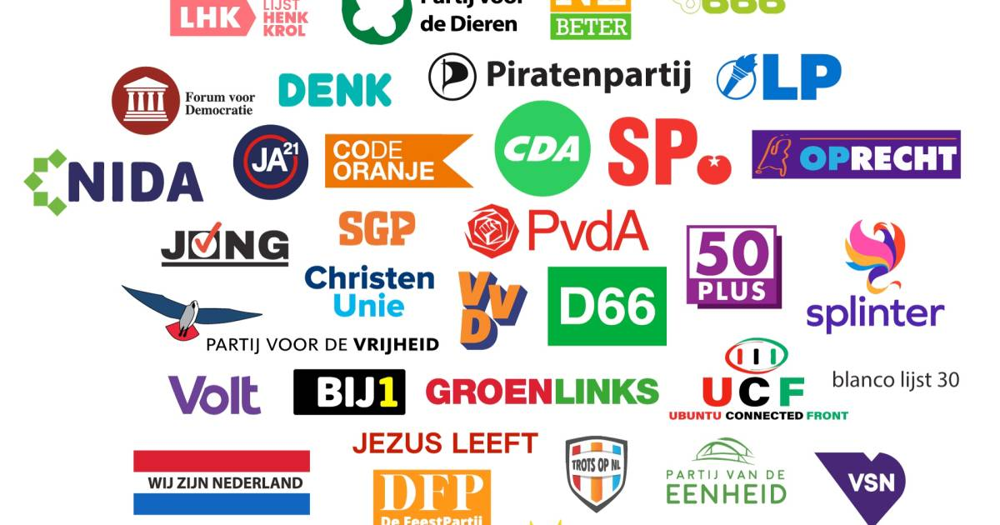

Welkom bij De Wijzer

Mijn naam is Anne de Wit en mijn compagnon is de heer David Watson.
De verkiezingen komen eraan, en het kan moeilijk zijn of veel tijd kosten om te kiezen op welke partij u wilt stemmen. Dus om kiezers te stimuleren om
alsnog naar de stembuis te gaan, hebben wij deze stemwijzer gemaakt. We hopen dat we hiermee van hulp kunnen zijn.